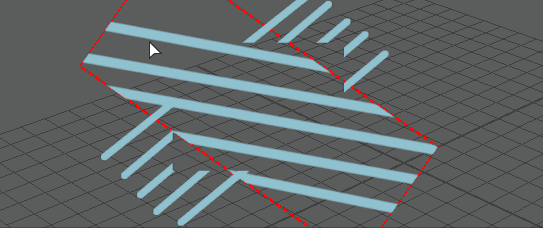

Blue Pencil 变换工具可用于选择图形的某个区域并对其进行变换（平移、旋转和缩放）。也可以使用“变换”(Transform)工具快捷菜单剪切、复制、粘贴和翻转选定区域。
若要进入 Blue Pencil 变换模式，请执行下列操作之一：
- 单击 Blue Pencil 工具栏上的 Blue Pencil“变换”(Transform)图标 ，或者
- 在图形上单击鼠标右键，然后从 Blue Pencil 标记菜单中选择“变换”(Transform)
- 按 Esc 键退出变换模式
- 按 Backspace 键重置变换模式
- 按 Enter 键确认您的选择
注： 如果未选择任何区域并按 Enter 键，则会选择整个区域。
有关如何编辑图形的信息，请参见清理 Blue Pencil 草图。
变换选定区域
注：
Blue Pencil 必须是活动工具，才能变换图形。
- 单击 Blue Pencil 工具栏上的“变换”(Transform)图标 以进入变换模式。也可以在图形上单击鼠标右键，然后从上下文菜单中选择“变换”(Transform)。
当进入 Blue Pencil 变换模式时，光标会变为白色箭头 ，工具箱中的 Blue Pencil 图标会在右下角显示 T 。
- 在视口中拖动以选择要更改的区域。
注： 如果进入变换模式，但不选择区域，则 Blue Pencil 会认为整个图像都被选定。

- 选择图形的某个区域后，按 Enter 键进行确认。也可以在选定区域上单击鼠标右键以显示上下文菜单，然后选择“变换”(Transform)。
- 拖动、按住 Shift 键并拖动或使用鼠标中键拖动，以平移、旋转或缩放选定区域。有关如何变换选定区域，请参见下面的修改选定区域。

- 按 Enter 键应用变换，或在图形上单击鼠标右键并选择“应用变换”(Apply Transformation)。
- 按 Esc 键取消，或按 Backspace 键还原变换。

有关修改选定区域的不同方法，请参见下文。
- 平移（移动）图形
- 在变换模式下选择区域后，拖动以重新定位该区域。如果未选择区域，可以重新定位整个图像
- 旋转图形
- 按住 Shift 键并在选定区域内拖动以对其进行旋转。
- 均匀调整大小（均匀缩放）
- 使用鼠标中键拖动，以调整受纵横比约束的选定区域的尺寸。
- 非均匀调整大小（非均匀缩放）
- 在选定区域内按住 Shift 键并使用鼠标中键拖动，以自由调整选定区域的尺寸。
- 取消变换
- 若要撤消对选定区域所做的更改，请按 Esc 键（或在选定区域上单击鼠标右键并选择“还原变换”(Revert Transform)）。
剪切、复制和粘贴
使用 Blue Pencil 变换工具，可以将选定区域剪切或复制到剪贴板，然后将其粘贴到当前图形或者其他帧或层上的图形中。
- 在 Blue Pencil 工具中进入变换模式。
- 拖动以选择一个区域。
- 在视口中单击鼠标右键以显示上下文菜单。
Blue Pencil 的“变换”(Transform)快捷菜单
- 从上下文菜单中选择“剪切”(Cut)。
-
“粘贴”(Paste)会将剪贴板的内容应用于当前图形。
- “粘贴和变换”(Paste and Transform)可用于重新定位要重新定位的图形。
按 Enter 键以应用变换。
可选：在剪切选定区域后
- 移动到其他帧
- 单击鼠标右键并选择“粘贴和变换”(Paste and Transform)。
- 移动粘贴的选定区域。
- 按 Enter 键以应用变换。
翻转选定区域
- 在进入变换模式（请参见上述步骤）后，在视口中单击鼠标右键以显示上下文菜单。
- 选择“变换”(Transform)以进入 Blue Pencil 变换模式。
- 再次单击鼠标右键，会发现上下文菜单发生改变，此时提供可垂直或水平翻转选定区域的选项。
Blue Pencil 的“应用变换”(Apply Transform)快捷菜单
- 按 Enter 键应用更改，或再次单击鼠标右键并选择“应用变换”(Apply Transform)。
单击鼠标右键并选择“水平翻转”(Flip Horizontal)或“垂直翻转”(Flip Vertical)以翻转选定区域